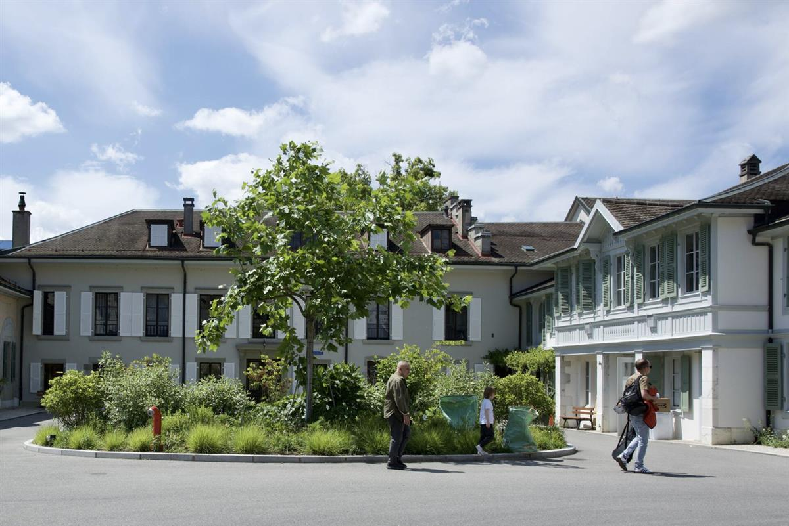
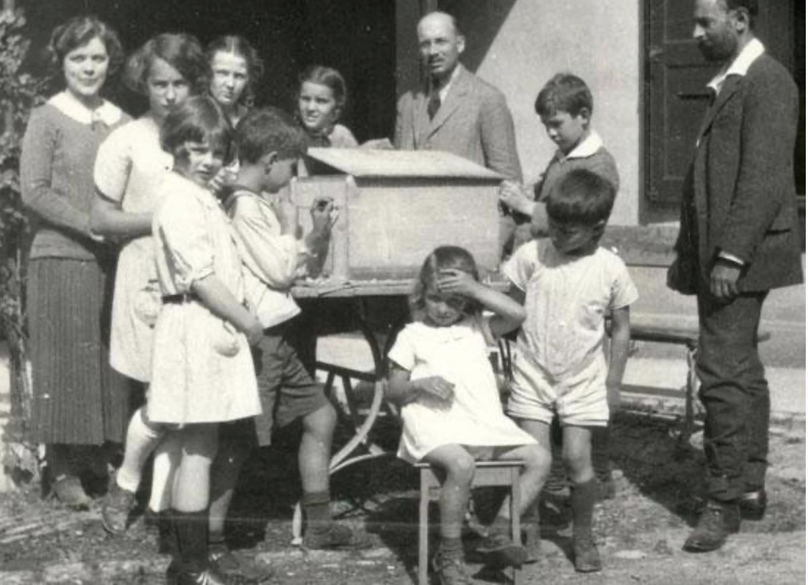
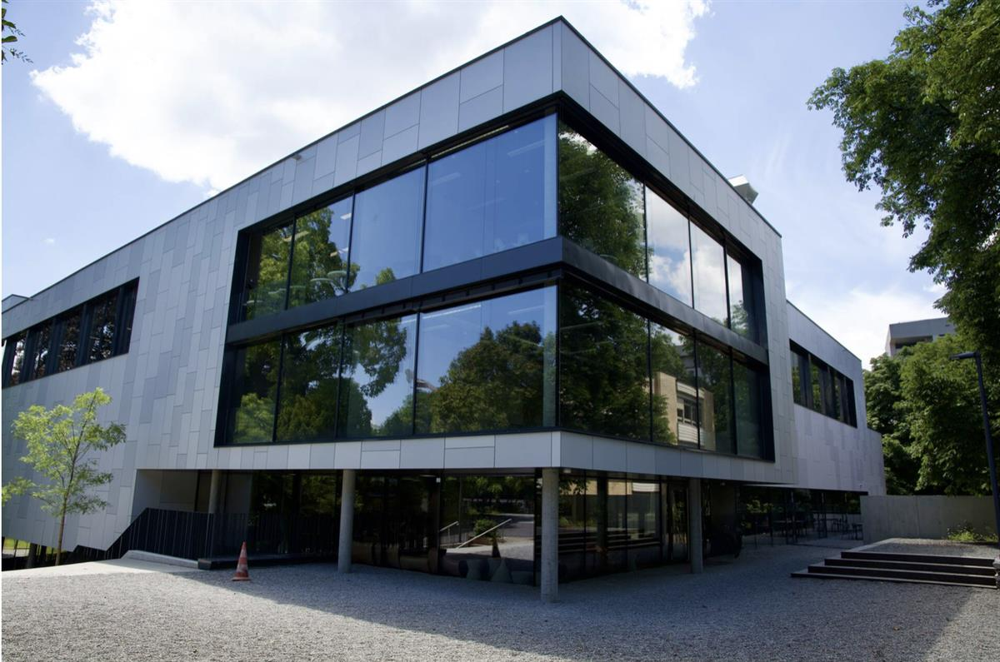
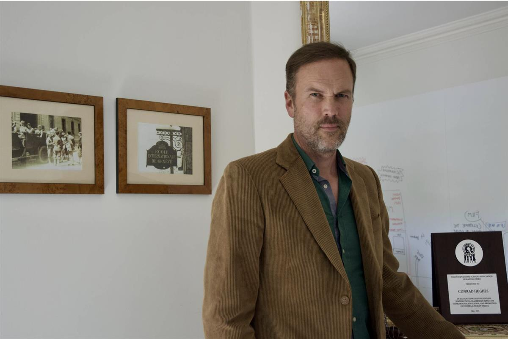

Entrance to Ecolint’s La Grande Boissière campus in Geneva, with original school sign, 5 June 2024. (Geneva Solutions/Paula Dupraz-Dobias)
ON SOURCE: GENEVA SOLUTIONS
PEACE & HUMANITARIAN Education ACTU Published on June 09, 2024 14:25. / Updated on June 09, 2024 23:00.
One hundred years on, international school reverberates beyond Geneva.
As the École Internationale de Genève prepares to welcome thousands of former students and teachers for its centenary, the school’s director general explains the role it has played within international Geneva and beyond.
On a recent afternoon visit to the world’s oldest international school, a few teenage students could be seen shuffling between classes while parents and nannies of younger pupils milled about at the gate before the end of the school day.
The grounds at the Grande Boissière campus in the Chêne Bougeries neighbourhood were rather quiet as senior students sat their final exams ahead of graduation in two weeks time, similar to what would be expected in early June at most schools in the northern hemisphere.
In the background, however, power washers could be heard humming, a hint of preparations in place for planned festivities to celebrate Ecole Internationale de Genève’s (Ecolint) 100th anniversary.
Sitting in his office in one of the campus’s older buildings, Conrad Hughes, the school’s director, told Geneva Solutions about the pioneering role that the establishment has played in contributing to Geneva's international ecosystem.
“We are part of Geneva’s history and patrimony, not just a sort of annexe to international organisations,” he said.
A school for peace from the ashes of WWI

In 1924, a group of senior international civil servants and their wives, recruited after World War I to join the newly-founded League of Nations and the International Labour Organization, founded the school, initially enrolling nine students for a first year’s test run.
The initiators – Swiss, French, Polish and American – embraced a reformist schooling movement known at the time as progressive education and consulted with experts from the local Institut Rousseau that promoted the French thinker’s pedagogy of forming free human beings.
A “small group of pioneers”, including Ludwig Rajchman, a medical doctor who later founded Unicef, thus came together “to create a school against the war and for peace”, Hughes explained. “Many had come back from the front disillusioned and were determined to set up a school for peace for children from different nationalities and different belief systems.”
Nearby in Geneva at the time, an Italian school taught a national curriculum, which, like other schools throughout Europe during the war, offered a “strong vehicle for national proselytisation”, Hughes said.
What does international mean?

First students at the École Internationale de Genève in 1924. (Ecolint archive photo)
Nicknamed the “League school”, Ecolint was both co-ed and bilingual in English and French, the two official languages of the new international body at the time and which remain the two main tongues of instruction to this day.
A boarding school had provided a valuable income source, initially attracting high-paying students from the United States – it ran until 2001. But it generated some friction early on among the school’s founders, according to Leonora Dugonjic-Rodwin, a former researcher at the University of Geneva, as economic interests came into conflict with the “pure theory” of internationalism.
Nonetheless, the school’s first annual report in 1926 stressed that its mission was to “prompt in the students the development of a truly international mind and to create an atmosphere around them, which fosters the development of such a mind”.
The Swiss-British-South African national pointed to some of the notable alumni who have gone on to become global leaders such as the late Indian prime minister Indira Gandhi and former UN secretary general Kofi Annan.
A century later, “international mindedness… has become something of a norm. It’s difficult to operate at any level of society without being victim, propagator or somehow enmeshed in the global network,” said Hughes.
The former secondary school head at La Grande Boissière stressed “intercultural competence” is now more important than international mindedness, or understanding, respecting and valuing different cultures. That is why the school emphasises inclusion, diversity, equity and anti-racism, and puts the United Nations Sustainable Development Goals at the centre of its curriculum.
Some of those values have been inherited from its early leaders, like Marie-Therèse Maurette, Ecolint’s director during the Second World War, who clandestinely brought Jewish refugees to the school and offered them free education, which prompted financial difficulties for the school.
“The school basically went bankrupt, and teachers were not earning their salaries before Arthur Sweetser (an American Ecolint founder) was able to stump up the cash more than once.” Sweetser had acted as a key fundraiser, bringing in support from US industrialist families, including the Rockefellers.
By the 1960s, the international community in Geneva had grown sharply with the arrival of global companies. For decades, the school had committed to prepare students for Swiss, US, British and French university entry exams, but the rising student population put logistical as well as financial strains on the tutoring. Over several years, a group of Ecolint teachers developed the International Baccalaureate (IB) programme, which was launched in 1968.
The IB diploma programme is now taught in over 140 countries, allowing students to integrate universities worldwide after high school graduation.

Ecolint’s newest sports centre, completed in 2023, at the Grande Boissière campus in Geneva. (Geneva Solutions/Paula Dupraz-Dobias)Integration in Geneva
Also rising from the International School of Geneva was the Student League of Nations, now known as the Model UN. Started in 1953, students learn to draft and debate resolutions, similar to UN bodies.
“They learn about UN-style diplomacy and are doing it in one of the rooms at the UN for two days every year,” Hughes explained.
On the school’s three campuses located across Geneva and Vaud, the student population, now numbering roughly 4,500 from 143 nationalities, regularly hear guest speakers from UN organisations. Tatiana Volovaya, UN director general in Geneva, WHO chief Tedros Adhamon Ghebreyesus and the director general of the World Trade Organization, Ngozi Okonjo-Iweala have recently spoken to classes.
Unlike the United Nations International School in New York, created in the late 1940s by parents working at the new UN headquarters and with which the IB programme was coordinated, Ecolint is not a formal UN school.

Conrad Hughes, director of the International School of Geneva, in his office, 5 June 2024 (Geneva Solutions/Paula Dupraz-Dobias)Meanwhile, Ecolint – where a third of students are linked to international organisations and another third are from families stationed in Geneva with global companies – has at times been criticised by locals for being removed from the local community and even elitist.
Hughes said sports competitions and social and environmental projects in the community and a new programme that will teach Swiss history, politics and geography, should help foment integration. He said that international schools generally had to work harder than national schools “to make the whole community aware of the need to learn to live together in an interculturally symbiotic reality”.
The school director also pointed out that the annual tuition, which ranges between CHF 25,000 and 35,000, was not the highest in Geneva. Ecolint, he assured, is committed to making the school as affordable as possible for parents. A handful of fellowships are provided to refugees from conflict areas while financial aid is also offered to parents upon request.
But with international organisations currently subsidising roughly 70 per cent of tuition at the school, Geneva Solutions asked whether the school was concerned about future attendance amid the effects of the UN liquidity crisis in full view at the Palais des Nations.
“Is it top on our list of concerns? No,” Hughes replied. But, “anything that is going to hurt those organisations – be it fiscal, political reputational – will affect us”.
ON SOURCE: GENEVA SOLUTIONS